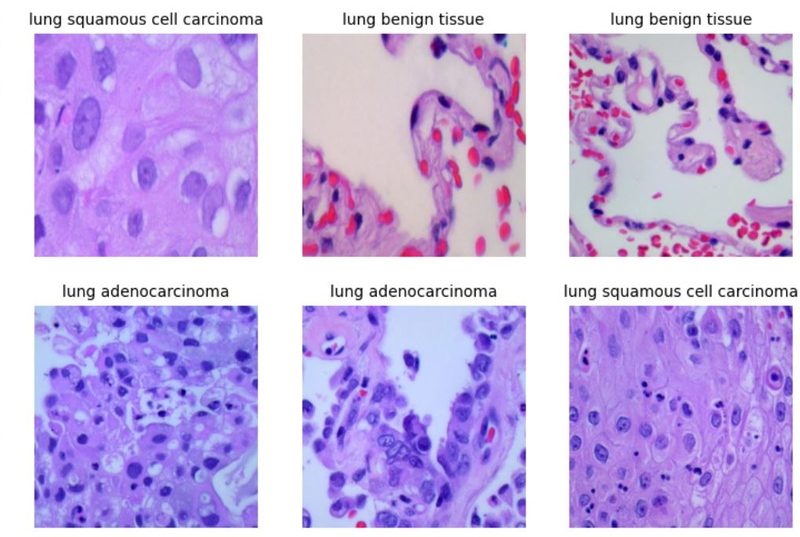
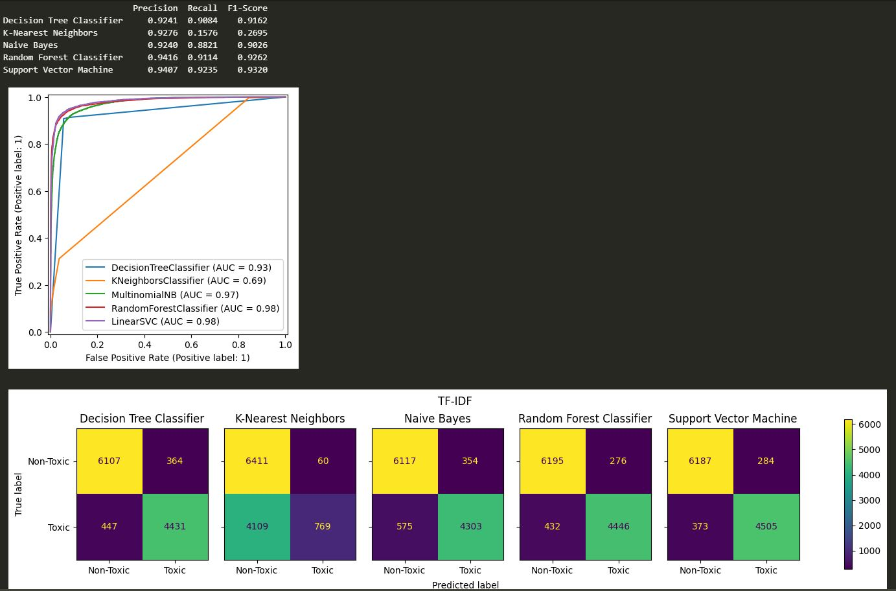
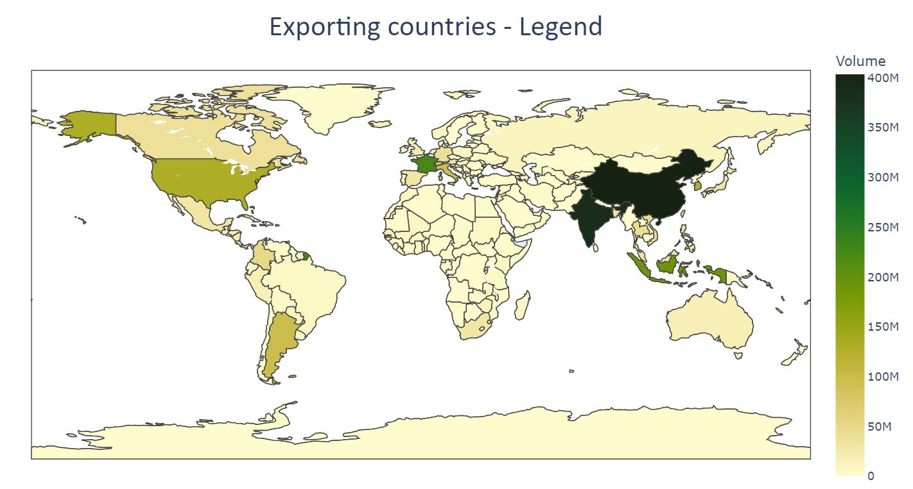
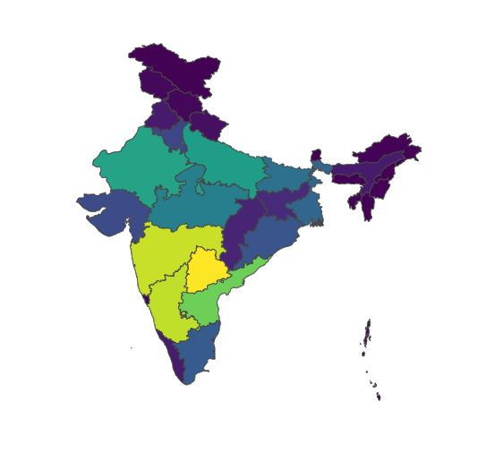
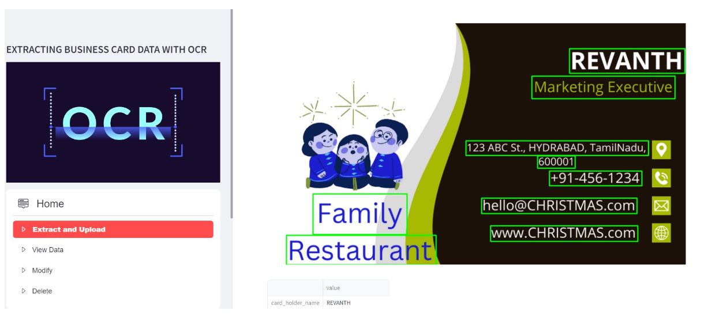
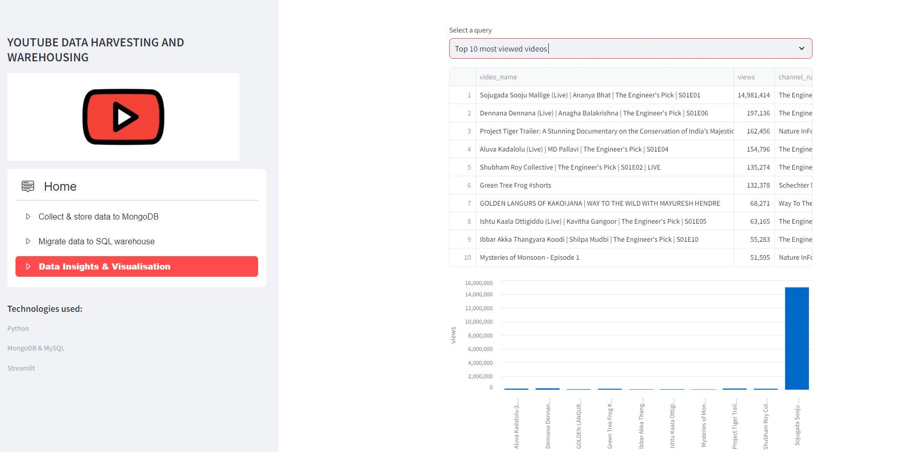

Dataset contains microscopic images of lung tissues of 3 classes with
distinction of benign and two variants of cancer. Deep learning used
to categorize images into cancerous or non-cancerous. Dataset has
15000 augmented images. CNN built using Keras. Model trained for
60 epochs. Best saved model with 96% validation accuracy is used
for making new predictions.

To detect toxic language used in tweets and flag potentially harmful
content on social media. Data is pre-processed with NLTK.
Wordcloud plotted for EDA. Developing multiple ML models such as
naive bayes, decision tree, random forest, KNN and SVM. Models
are evaluated on multiple metrics such as precision, recall, F1-Score.
SVM with 0.98 AUC used to make new predictions.

CITES organisation records international legal import and export
of wild flora and fauna from 1975. Data cleaning and preprocessing
done to separate, aggregate only fauna records. Inconsistent units
were fixed. Data uploaded to MySQL database. Data queried and
visualised using matplotlib. Trading volume over years, top
importing and exporting countries, geo-visualisation of common
trading routes, purpose, top species, trading form etc. are some of
insights visualised.

The Phonepe pulse Github repository contains a large amount of data related to various metrics
and statistics. The goal is to extract this data and process it to obtain insights and
information that can be visualized in a user-friendly manner.

Streamlit application that allows users to upload an image of a business card and extract
relevant information from it using easy OCR.

Streamlit application that allows users to access and analyze data from multiple YouTube
channels.